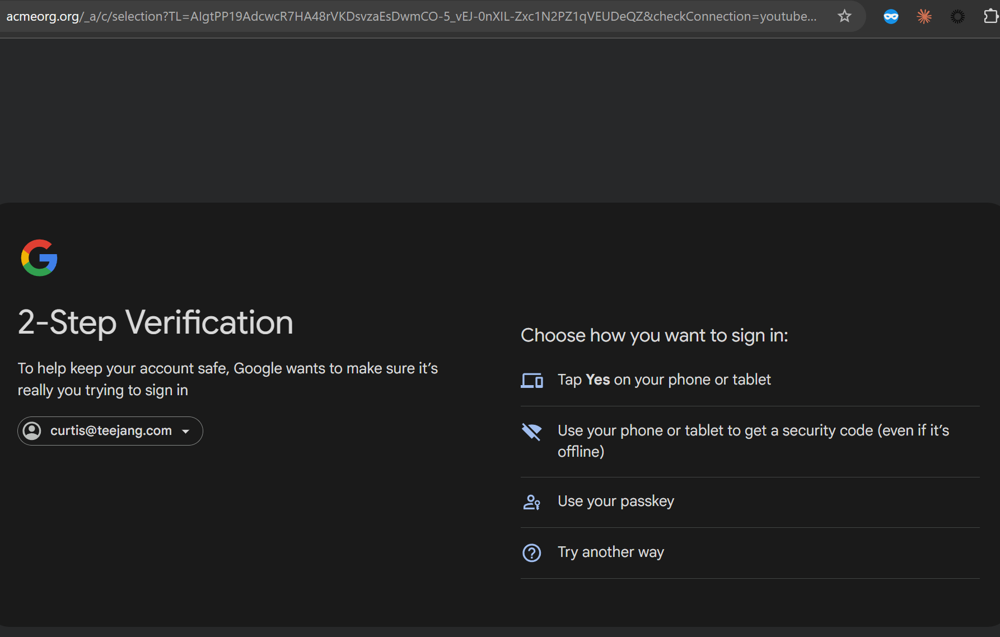
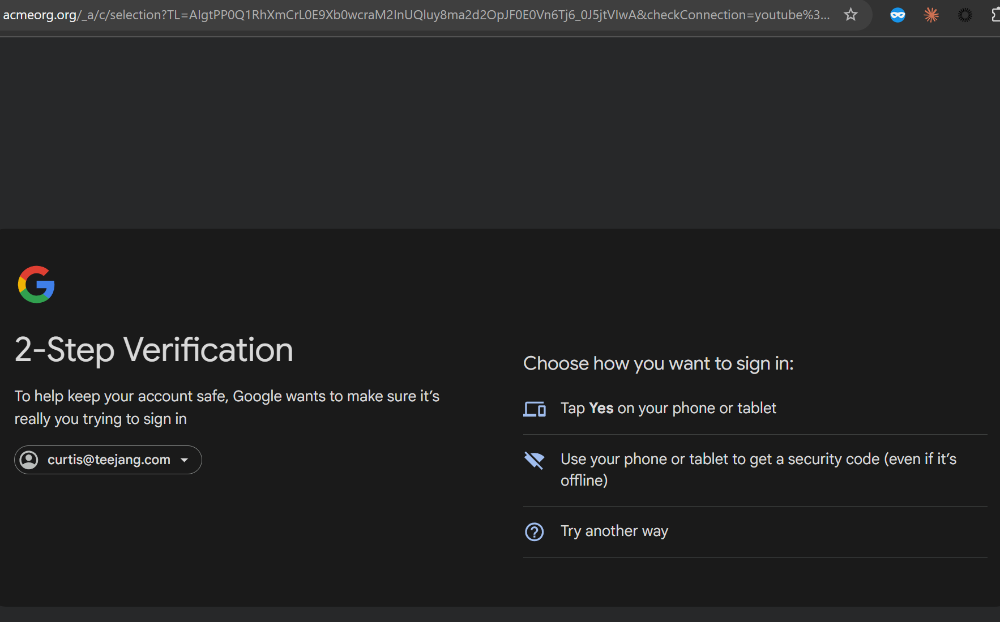

There is a bad habit in a lot of security marketing to flatten every improvement into the same story: attackers always find a way, so every defense is just one more speed bump. That is not the right way to talk about passkeys. Passkeys and hardware-backed WebAuthn flows are a real step forward because they resist the classic origin-swapped phishing path that still works against passwords, push prompts, SMS codes, and TOTP apps.
But that still leaves an important assessment question. If an environment enables passkeys while continuing to offer weaker recovery or fallback authentication methods, what actually happens when the target never completes the phishing-resistant path? That is where the PhishU Framework can test the reality instead of the policy brochure.
The Framework now covers that question from two different angles. One lives on cloned landing page types. The other lives on Transparent Proxy AiTM page types. Together they tell a more honest story about what "phishing-resistant by default" really means in practice.
Cloned Page Types: Simulating the Human Downgrade Path
On cloned page types, the Passkey Bypass overlay is not pretending to break passkeys cryptographically. It is testing whether a target can be steered away from the phishing-resistant ceremony and into a weaker fallback path that the operator is actually able to phish. The overlay presents the familiar passkey moment, simulates the flow failing, and then falls back into a conventional username-and-password path the target may already expect from older sign-in behavior.
That matters because a lot of organizations are mid-transition. Users have heard "use your passkey," but they have also spent years learning that login friction often ends with "try another way." If the assessment can reproduce that decision point realistically, it can measure whether the target treats the weaker route as suspicious or just as another normal sign-in detour.

That is a useful result whether the phish works or not. If the target refuses the downgrade and the assessment dies there, the organization has evidence that its passkey deployment and user expectations are doing real work. If the target continues into the fallback route, the team gets a concrete training and remediation story: the issue was not the passkey itself, but the surrounding workflow and the fallback logic that stayed available.
AiTM Proxy Page Types: Modifying the Real Picker Before the Victim Sees It
The second path is more interesting because it moves out of simulation and into response shaping on a live authentication flow. On Transparent Proxy AiTM page types, the Framework can inspect the upstream identity provider response, identify the phishing-resistant options in the authentication-method picker, and strip them before the modified page is forwarded to the victim.
That changes the user experience in a very important way. Instead of asking whether the user will give up on passkeys after a cloned-page failure prompt, the test asks what happens when the user never even sees the passkey option in the real picker they were about to interact with. If all that remains are weaker factors like push, TOTP, SMS, or a password-backed fallback, then the operational question becomes which phishable path the victim chooses next.


That distinction is why the technique is worth understanding. The point is not that FIDO2 is broken. The point is that many organizations are still relying on a menu of authentication options where only some of them are phishing-resistant. If an attacker can influence the menu itself, the weakest surviving factor becomes the real security boundary.
Taking It Further: Let the Framework Choose the Fallback We Want
The obvious next step is not just stripping phishing-resistant methods. It is steering the victim into the ordered fallback path the operator actually wants to test. In practice, not every phishable method is equally useful. Some operators may prefer push because it preserves the familiar session-hijack story. Others may want TOTP, SMS, or even a password-backed route depending on the target environment and the objective of the engagement.
That opens the door to a stronger control model inside the Framework: define the preferred fallback order once for the AiTM page type, then let the proxy shape the picker accordingly. If the operator preference is push first, then TOTP, then SMS, the Framework could strip everything above that priority line and funnel the user toward the first still-available phishable method. If the target tenant does not offer that method, the flow can degrade cleanly to the next preferred option instead of leaving the outcome entirely up to the victim.
That is interesting from both the offensive and defensive side. Offensively, it lets the operator test the exact fallback path most relevant to the engagement instead of hoping the victim clicks the right button. Defensively, it makes the lesson much harder to dismiss because the resulting report can show that the problem was not generic "MFA fatigue" or a random victim decision. The problem was that the environment still exposed a phishable recovery hierarchy that could be manipulated toward a specific outcome.
The Honest Limits Still Matter
This kind of testing is only useful if it stays honest. If the tenant truly enforces phishing-resistant authentication server-side, the downgrade should fail. If a user is genuinely passkey-only with no weaker method registered, the phish should fail. If stronger policy blocks the chosen fallback after the picker is manipulated, that is not a disappointing result. That is evidence that the organization's controls are doing what they were supposed to do.
That is why the right message is not "passkeys are useless." The right message is the opposite. Passkeys are one of the best improvements defenders can deploy. What needs scrutiny is the surrounding recovery, compatibility, and transition logic that can quietly reintroduce the older risk path even when passkeys are technically available.
Why This Belongs in the Same Framework
This is exactly the kind of problem that gets messy when it is split across too many tools. One system hosts the landing pages. Another does the proxying. Another captures the session. Another tracks the training outcome. Another writes the report. The value of the PhishU Framework is that the whole assessment can stay in one place even as the technique shifts from a cloned-page downgrade simulation to a live proxy-based fallback-manipulation workflow.
That makes the outcome more useful for red teams, pentest firms, and defenders alike. The result is not just that a target clicked something. The result is a more precise answer to the question organizations actually care about: when passkeys are available but weak fallbacks still exist, which security boundary really matters in practice?
Want to test where passkeys really hold and where fallback abuse still survives?
The PhishU Framework can model the downgrade story from both sides: cloned-page passkey bypass overlays for user-decision testing and AiTM proxy shaping for live fallback-path analysis.
Contact Us